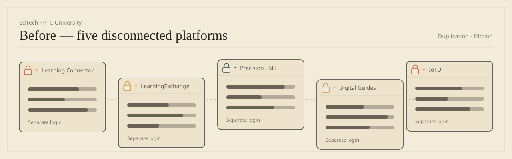
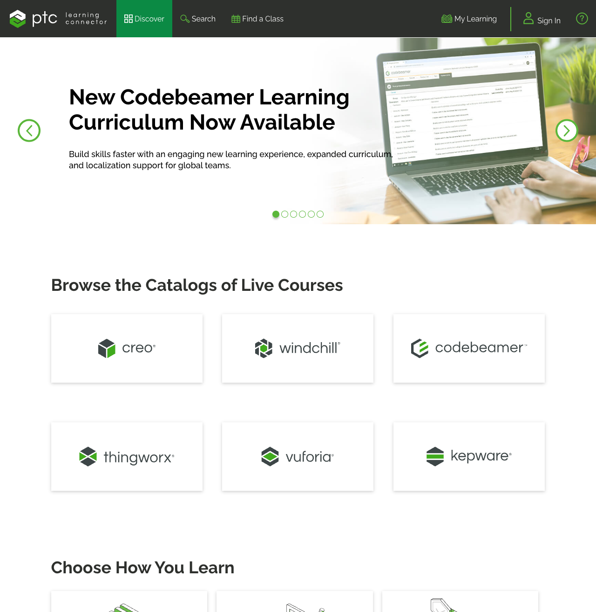

- Role
- Product & Design Lead
- Span
- 2014–2019
- Platforms
- 5 → 1
- Locales
- 9 → 11
- Learners
- 550k+ reg · 350k+ active
- Subscription
- 0% → 64%
The short version
The brief said “redesign the UX.” Three weeks in the customer-success recordings, I argued the contract was the broken interface and asked PTC to kill four of its five products. The redesign took a quarter; the argument took a year. $1M / yr off the print budget, subscription 0% → 64% of new bookings. Public numbers throughout — and the accessibility miss I got wrong first, written up in full below.

The brief said "redesign the UX." After three weeks in the call recordings, I argued the contract was the broken interface — and asked PTC to bet the project on killing four of its five products and moving the survivor off perpetual licenses.
One decision · and everything it took to make it
The real choice: design the screens, or design the business model.

PTC sold its software on perpetual licenses: pay once, own forever. Around it sat five learning platforms — Learning Connector, LearningExchange, Precision LMS, Digital Guides, IoTU — five URLs, five logins, five lines on an invoice. Of 550k+ registered learners, only 350k+ ever came back. The official metric counted the gap and never asked why. And these weren't hobbyists drifting off — the learners were working engineers at NASA, Boeing, Toyota, Airbus and Apple, companies whose products don't tolerate half-trained hands. When 200,000 of them stop showing up, that's not a churn statistic; it's a verdict.
I spent three weeks inside the customer-success call recordings. Nothing was wrong with the navigation. Perpetual licenses meant no recurring revenue. No recurring revenue meant stale content. Stale content meant engineers learned on YouTube instead.
That was the fork. I could ship the redesign the brief asked for, or argue that the contract underneath it was the thing actually failing — and that no amount of cleaner navigation would fix a product nobody had a reason to come back to.
The safe version would have demoed beautifully and changed nothing.
The move in the brief was a cleaner skin over the same five products on perpetual licenses. It would have looked successful in a portfolio and changed nothing — a prettier version of the thing already leaving 200k+ of its registered learners inactive and pricing itself out of recurring revenue.
So the real deliverable was never a screen. It was a political argument for killing four products and rewriting the contract — with the screens built to back it up.
I made the call, then spent a year making the case.

The CRO had all of the revenue — 100% — sitting on perpetual licenses and said so loudly. I took the phased version to the President of PTC University, who backed it: new customers on annual subscription from Q3 2017, existing ones protected for 24 months, then migrated. The redesign took a quarter. The argument took a year.
Making the call was the start of the job, not the end of it. What followed was product work in the plainest sense: I defined what Learning Connector was and owned its quarterly release roadmap from 2016 to 2019 — and I ran the consolidation it existed to deliver. 150,000 active learners moved onto the single platform over 24 months, each arriving with their history intact; the first platform’s full switch-off alone took six months of migration paths, stakeholder management, and soft landings before the portal went dark. Killing a product an executive sponsors is not a design deliverable — it is a roadmap you have to own out loud, quarter after quarter, while the people whose platforms are dying watch you do it.
Twelve months on: 64% of new bookings were subscription, against 0% in Q3 2017. The grandfathered cohort held at 78% through its first migration. Perpetual was 100% of total revenue when I started. The funnel that drove it was product-led, and it was mine to design: free tutorials and trainings whose experience converted learners to premium subscriptions. Pricing and packaging stayed with PTC leadership — the free-to-paid path was the design work.
Context for the bet: PTC’s company-wide move off perpetual licenses is documented as one of the industry’s smoothest — no revenue dip after the 2015 launch, where Autodesk’s transition dipped sharply. The University’s 0 → 64% ran inside that larger shift; the corporate numbers are PTC’s, not mine.
Every screen after that earned its place by making the case real:

One login, or no login. With four engineers and one PM, I shipped single sign-on across all five platforms in 14 weeks and rebuilt the IA as a graph, not a tree — a learner on Precision LMS now saw "engineers like you also learned on IoTU" without leaving the surface. Cross-traffic became the biggest acquisition channel the under-used platforms ever had.
Nobody searches the way marketing writes. The catalog mirrored the release calendar — "Precision LMS 5.0 — New Features." Engineers think in problems, not version numbers. I lost that review twice and won the third with the search-query log from logged-out users: every query was problem-shaped, zero were feature-shaped. Enrollment rose 28% the quarter after launch, against the prior four-quarter rolling baseline.
Two learners live inside every engineer. One says "I need to figure this out now" — mid-task, tool open, two to twenty minutes to spare. The other says "I want to invest in skills" — a deliberate two-hour-plus commitment to a course or certification. The old platforms served only the second and wondered why daily engagement was low. The rebuilt content architecture served both on purpose: micro-learning — short on-the-job tutorials, quick-reference guides, community answers, findable by typing the problem — and macro-learning — structured courses and certification paths, found by recommendation. Micro brought engineers back daily; macro was what their companies renewed the subscription for. The two formats fed each other — the free tutorials and trainings did the convincing, the premium subscription was the upgrade they earned — and the "continuous value" argument stood on that product-led loop.
Every query was problem-shaped. Zero were feature-shaped. I lost that review twice — the query log from logged-out users won the third.
A user guide with a shipping cost. Every product shipped with a 200-page printed manual — printing, freight and warehousing cost PTC roughly $1M a year, and locked the content to a release cycle. I led the digital guidebook that replaced it: print volume fell 92% in year one, the $1M became recurring savings against the 2016 print budget, and the guide became a living surface tied to the subscription.
Translation was an architecture decision. I built the IA knowing German runs ~30% longer than English — short labels, shallow hierarchy, no text baked into images, width buffers. Eleven locales, each WCAG AA, with manual screen-reader and keyboard testing per language. And the platform was made responsive — mobile was 4% of sessions when we started, and once the redesign met people on the 3G handsets engineers in emerging markets actually carried, mobile became a real channel. The growth outlived my tenure; I don't quote an endpoint I can't stand behind.

What the research found: nobody used our product names.
The homepage wasn't decided by taste. I ran research studies and usability testing with customers, and one pattern kept repeating: people didn't recognize the offerings by their individual product names. They called all of it, collectively, "PTC University."
That finding drove two decisions at once. The five properties consolidated under the one name customers already used — PTC University became the single front door instead of five product-branded sites. And the homepage was personalized, keyed to the license: each visitor saw what their company had actually bought, with everything else behind one "Explore" link — because a page organized by product names nobody recognized was a page organized for us, not for them.
Everything else folds behind one link → Explore
The users had already renamed the product. The research just gave us permission to catch up.
The bet still carried a real cost: a 24-month grandfather promise to existing customers that I couldn't walk back. I priced that in on purpose — a homepage you can revise; a redesign that quietly preserves a naming system customers don't use, you can't.
The miss. Written down, as promised.
On the accessibility work, my first pass was textbook-diligent and wrong. I loaded the interface with ARIA labels — the descriptive text screen readers speak aloud — on everything, long and thorough, convinced more description meant more help. Then I ran a usability study with about ten visually-impaired users and watched my diligence fail: they don't listen through sentences. They skim — jumping by headings and landmarks at speed, the way sighted users scan a page — and my verbose labels were slowing down exactly the people they were built to serve.
The fix started with admitting I'd designed from imagination instead of experience. I switched my monitor off and spent a week navigating the system by screen reader alone — then re-did the front-end code with what that week taught me: terse labels, honest landmarks, headings that carry the structure. The second pass worked because the first one had failed in front of me.
It's the cheapest lesson on this page and the one I've reused most: empathy claimed is a slide; empathy earned changes the code. Every "loop ends in front of a user" rule in my process traces back to this miss.
The receipt.
Every number with baseline + window
Where this wouldn’t transfer
This worked because of two advantages: a full year of runway, and the executives who owned the revenue sitting in the room. Take away either one — try to make the same case in a single quarter, or without those executives listening — and it fails. Good design was necessary here, but the time and the access are what made it win.
The principle it left me with.
Most platform redesigns stall because the design team isn't allowed to ask the contract question sitting underneath them. Every move here — subscription, SSO, use-case content, license-keyed personalization, the living guidebook, locale-first architecture — wore UX clothing over a business-model skeleton.
I run that check on every AI product now. When adoption stalls, "make it easier to find" is sometimes the answer — but "who pays for this, and does paying make them use it?" is what finds the real ceiling.
This is the kind of problem I solve full-time.
If your product has a gap between a right answer and an acted-on one, let's talk — 30 minutes, no pitch.
Book 30 minutesArpit has worked with me for years and I value his honesty and hard work. He's been an integral part of my staff… involved in all facets of the team, from design to development to hiring and onboarding of new members.
I write about this in my newsletter ↗
Five platforms became one, and the business model followed. Next: the same discipline with no model in the room — reward screens I drew and coded myself, for four million people.